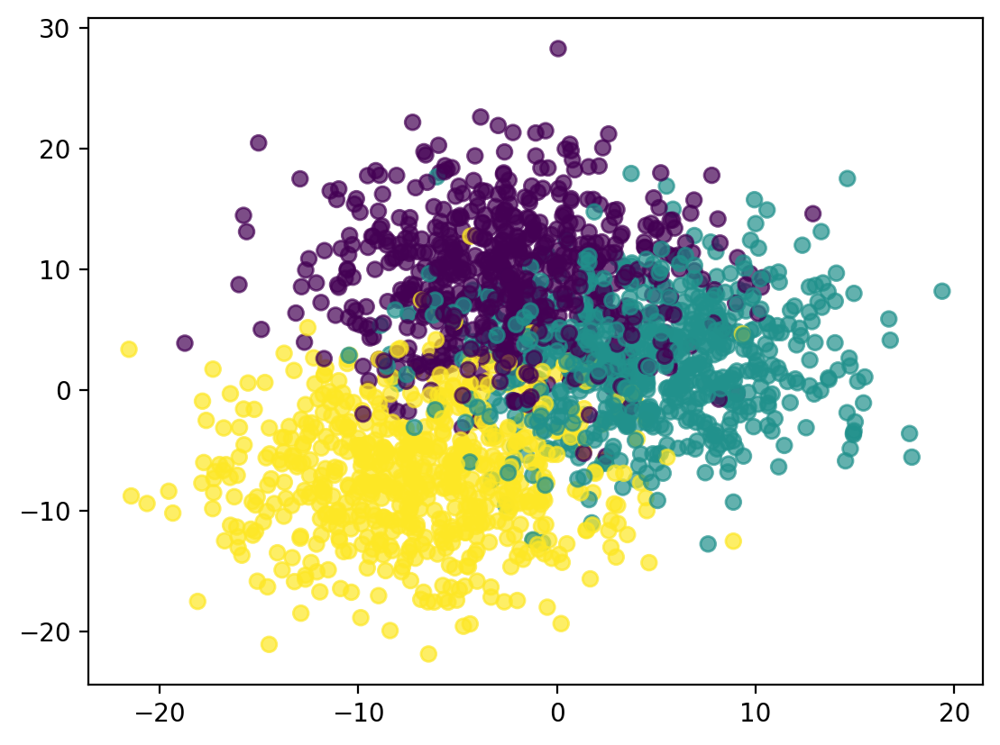

import sklearn
import pandas as pd
import matplotlib.pyplot as plt
%matplotlib inline
%config InlineBackend.figure_format='retina'This is a work in progress. I will be adding more content to this post in the coming days.
Reference: https://scikit-learn.org/stable/auto_examples/calibration/plot_calibration_multiclass.html#sphx-glr-auto-examples-calibration-plot-calibration-multiclass-py
import numpy as np
from sklearn.datasets import make_blobs
np.random.seed(0)
X, y = make_blobs(
n_samples=2000, n_features=2, centers=3, random_state=42, cluster_std=5.0
)
X_train, y_train = X[:600], y[:600]
X_valid, y_valid = X[600:1000], y[600:1000]
X_train_valid, y_train_valid = X[:1000], y[:1000]
X_test, y_test = X[1000:], y[1000:]# Scater plot showing different classes in different colors
plt.scatter(X[:, 0], X[:, 1], c=y ,alpha=0.7)
from sklearn.linear_model import LogisticRegression
lr = LogisticRegression()
lr.fit(X_train, y_train)LogisticRegression()In a Jupyter environment, please rerun this cell to show the HTML representation or trust the notebook.
On GitHub, the HTML representation is unable to render, please try loading this page with nbviewer.org.
LogisticRegression()
prob_df = pd.DataFrame(lr.predict_proba(X_valid))
prob_df.columns = lr.classes_
prob_df.head()| 0 | 1 | 2 | |
|---|---|---|---|
| 0 | 0.014323 | 0.959135 | 0.026542 |
| 1 | 0.000326 | 0.004617 | 0.995057 |
| 2 | 0.667887 | 0.322486 | 0.009627 |
| 3 | 0.953779 | 0.043703 | 0.002518 |
| 4 | 0.000029 | 0.000130 | 0.999841 |
pd.Series(prob_df.values[np.arange(400), y_valid]).quantile(0.1)0.3934260593598625# Get the predicted probability for the correct class for each sample
y_validarray([1, 2, 0, 0, 2, 2, 2, 1, 1, 2, 1, 1, 0, 1, 2, 0, 0, 1, 2, 1, 1, 2,
1, 0, 0, 2, 0, 0, 1, 2, 0, 1, 2, 0, 0, 2, 1, 2, 0, 1, 1, 0, 0, 1,
0, 0, 2, 2, 1, 1, 0, 0, 0, 1, 2, 2, 2, 1, 0, 1, 1, 1, 2, 0, 1, 1,
0, 1, 1, 2, 2, 1, 0, 1, 1, 0, 2, 1, 2, 2, 2, 1, 2, 1, 1, 2, 2, 1,
0, 1, 0, 1, 2, 2, 0, 0, 0, 1, 0, 1, 2, 2, 0, 2, 0, 2, 1, 0, 0, 1,
2, 2, 2, 1, 0, 2, 2, 0, 0, 2, 0, 1, 2, 0, 1, 1, 2, 2, 1, 1, 2, 2,
0, 0, 0, 0, 0, 0, 2, 0, 1, 1, 1, 2, 0, 2, 0, 1, 1, 0, 2, 0, 1, 0,
1, 0, 2, 2, 0, 0, 2, 1, 0, 2, 0, 2, 0, 0, 0, 1, 2, 0, 1, 2, 0, 2,
1, 0, 0, 0, 0, 2, 2, 1, 0, 2, 1, 1, 2, 0, 2, 0, 1, 2, 1, 1, 0, 0,
2, 0, 1, 1, 1, 1, 0, 2, 2, 1, 1, 1, 0, 2, 1, 2, 2, 2, 1, 0, 0, 2,
0, 0, 2, 2, 0, 2, 2, 2, 0, 1, 2, 0, 2, 0, 1, 0, 2, 2, 2, 1, 0, 1,
1, 2, 2, 0, 2, 2, 2, 2, 0, 2, 1, 0, 1, 0, 1, 1, 1, 0, 2, 0, 2, 1,
0, 1, 0, 1, 2, 0, 1, 2, 2, 2, 0, 1, 0, 1, 0, 1, 1, 2, 1, 1, 2, 0,
1, 0, 1, 2, 0, 1, 0, 1, 1, 2, 0, 1, 1, 0, 2, 2, 1, 2, 0, 1, 1, 2,
1, 2, 2, 0, 2, 2, 2, 0, 1, 2, 1, 0, 2, 1, 2, 0, 2, 1, 0, 1, 1, 2,
0, 1, 2, 0, 2, 1, 2, 0, 0, 0, 2, 1, 0, 1, 0, 2, 1, 0, 1, 2, 0, 1,
0, 1, 0, 2, 1, 1, 1, 2, 2, 0, 2, 2, 2, 1, 2, 1, 2, 2, 0, 0, 2, 2,
0, 1, 1, 0, 1, 2, 0, 1, 1, 2, 1, 0, 1, 0, 0, 2, 2, 0, 0, 1, 0, 0,
2, 2, 2, 2])# Get the predicted probability for the correct class for each sample| 1 | 2 | 0 | 0 | 2 | 2 | 2 | 1 | 1 | 2 | ... | 2 | 0 | 0 | 1 | 0 | 0 | 2 | 2 | 2 | 2 | |
|---|---|---|---|---|---|---|---|---|---|---|---|---|---|---|---|---|---|---|---|---|---|
| 0 | 0.959135 | 0.026542 | 0.014323 | 0.014323 | 0.026542 | 0.026542 | 0.026542 | 0.959135 | 0.959135 | 0.026542 | ... | 0.026542 | 0.014323 | 0.014323 | 0.959135 | 0.014323 | 0.014323 | 0.026542 | 0.026542 | 0.026542 | 0.026542 |
| 1 | 0.004617 | 0.995057 | 0.000326 | 0.000326 | 0.995057 | 0.995057 | 0.995057 | 0.004617 | 0.004617 | 0.995057 | ... | 0.995057 | 0.000326 | 0.000326 | 0.004617 | 0.000326 | 0.000326 | 0.995057 | 0.995057 | 0.995057 | 0.995057 |
| 2 | 0.322486 | 0.009627 | 0.667887 | 0.667887 | 0.009627 | 0.009627 | 0.009627 | 0.322486 | 0.322486 | 0.009627 | ... | 0.009627 | 0.667887 | 0.667887 | 0.322486 | 0.667887 | 0.667887 | 0.009627 | 0.009627 | 0.009627 | 0.009627 |
| 3 | 0.043703 | 0.002518 | 0.953779 | 0.953779 | 0.002518 | 0.002518 | 0.002518 | 0.043703 | 0.043703 | 0.002518 | ... | 0.002518 | 0.953779 | 0.953779 | 0.043703 | 0.953779 | 0.953779 | 0.002518 | 0.002518 | 0.002518 | 0.002518 |
| 4 | 0.000130 | 0.999841 | 0.000029 | 0.000029 | 0.999841 | 0.999841 | 0.999841 | 0.000130 | 0.000130 | 0.999841 | ... | 0.999841 | 0.000029 | 0.000029 | 0.000130 | 0.000029 | 0.000029 | 0.999841 | 0.999841 | 0.999841 | 0.999841 |
| ... | ... | ... | ... | ... | ... | ... | ... | ... | ... | ... | ... | ... | ... | ... | ... | ... | ... | ... | ... | ... | ... |
| 395 | 0.253215 | 0.038669 | 0.708116 | 0.708116 | 0.038669 | 0.038669 | 0.038669 | 0.253215 | 0.253215 | 0.038669 | ... | 0.038669 | 0.708116 | 0.708116 | 0.253215 | 0.708116 | 0.708116 | 0.038669 | 0.038669 | 0.038669 | 0.038669 |
| 396 | 0.000339 | 0.999576 | 0.000086 | 0.000086 | 0.999576 | 0.999576 | 0.999576 | 0.000339 | 0.000339 | 0.999576 | ... | 0.999576 | 0.000086 | 0.000086 | 0.000339 | 0.000086 | 0.000086 | 0.999576 | 0.999576 | 0.999576 | 0.999576 |
| 397 | 0.019843 | 0.980018 | 0.000139 | 0.000139 | 0.980018 | 0.980018 | 0.980018 | 0.019843 | 0.019843 | 0.980018 | ... | 0.980018 | 0.000139 | 0.000139 | 0.019843 | 0.000139 | 0.000139 | 0.980018 | 0.980018 | 0.980018 | 0.980018 |
| 398 | 0.000094 | 0.999780 | 0.000126 | 0.000126 | 0.999780 | 0.999780 | 0.999780 | 0.000094 | 0.000094 | 0.999780 | ... | 0.999780 | 0.000126 | 0.000126 | 0.000094 | 0.000126 | 0.000126 | 0.999780 | 0.999780 | 0.999780 | 0.999780 |
| 399 | 0.000133 | 0.999776 | 0.000092 | 0.000092 | 0.999776 | 0.999776 | 0.999776 | 0.000133 | 0.000133 | 0.999776 | ... | 0.999776 | 0.000092 | 0.000092 | 0.000133 | 0.000092 | 0.000092 | 0.999776 | 0.999776 | 0.999776 | 0.999776 |
400 rows × 400 columns